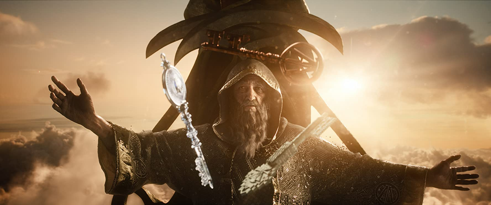
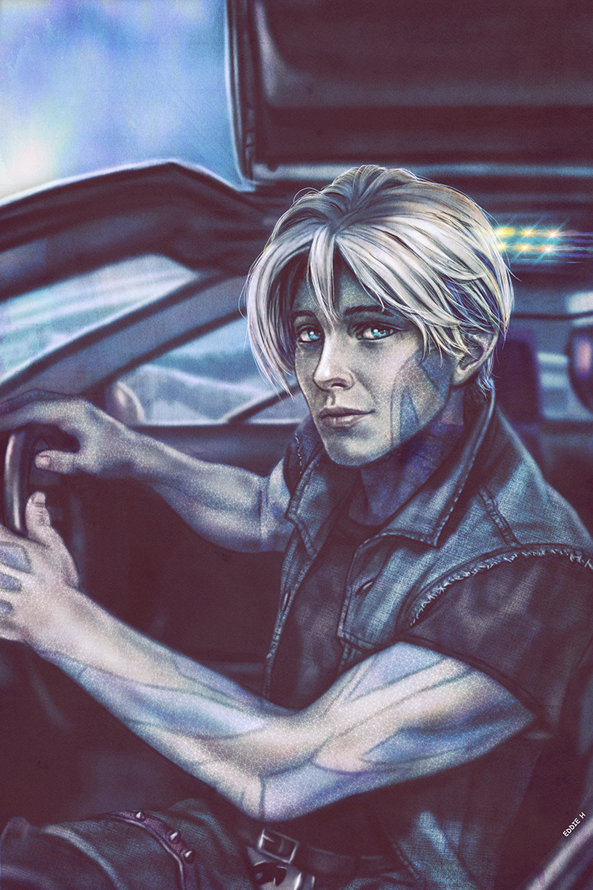
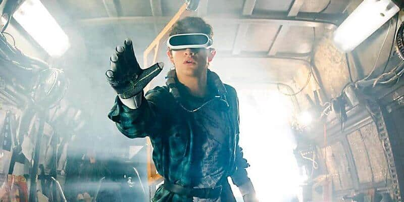
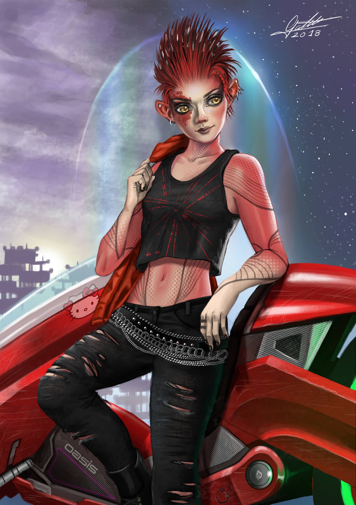
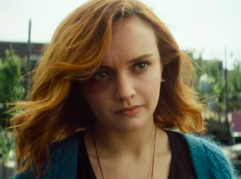
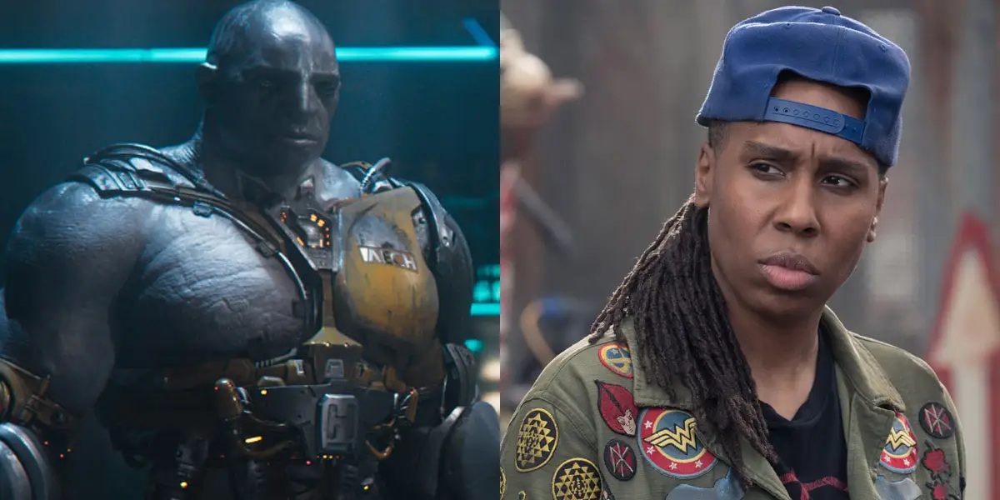
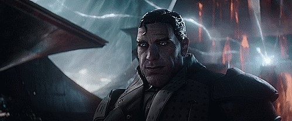
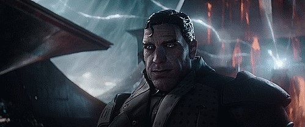

Characters :
James Halliday
Perhaps the most outstanding performance in this Spielberg movie goes to Mark Rylance. His portrayal of James Halliday, the creator of OASIS, is a work of a genius. He maintains this friendly approach towards the players and at the same time, asserts his position. Let’s also not forget how he made himself the Gandalf of OASIS. Halliday is the very center of this movie, the paragon of the OASIS. His reason for building the game is simple, and it’s not always easy to find one individual who can fulfill that prophecy.
 Parzival(Wade Watts)
The star of the show and the hero of the game, Parzival takes on a lot of pressure as he serves as our gateway to the OASIS. In the beginning, we know how he has always wanted to escape and he is pretty much a believable character. Parzival and Wade, his real identity, are good points for Tye Sheridan to show two different stories of the same person. The OASIS is a place for Wade to express himself as his dream persona, Parzival. He also shares great chemistry with his virtual crush, Art3mis.
 Art3mis(Samantha Cook)
There’s always a cool girl who you don’t want to mess with. She’s got this aura of a rock star babe in pixie haircut, and the next thing you know, you’re madly head over heels in love with her. Samantha, or Art3mis in the OASIS, is played by Olivia Cooke. She’s the aloof and smart person in the group, eventually lowering down her guards as she develops feelings for Parzival. Out of all the characters, her reason for playing in the OASIS is a bit less fun and more about her past.
Aech
Of course, we have the protagonist’s best friend. Aech is a giant mechanic figure with the size of a Hulk, which is used to Parzival’s advantage. He is characterized as a mechanic of vehicles and machines. As Parzival’s friend, he is also responsible for bringing him and Art3mis together. He is typically humorous and makes a lot of jokes, the actual stereotype for the role of a best friend. Although his relationship with Parzival serves as an important ingredient in the game in OASIS, the revelation of his true identity was not much of a surprise at all.
Nolan Sorento
As the main villain of the movie, Nolan Sorrento makes the devious power-hungry CEO of IOI who wants to get his hands on everything no matter what the cost. He has never been in the game and has no idea how it operates but wants it for himself. Sounds very familiar, ain’t it? The movie showed a flashback of his narrative that depicts his present actions and fleshes out his motives bit by bit. Ben Mendelsohn, the actor who portrays him, perfectly captured the scornful persona of Sorrento with both elegance and disdain.
 
